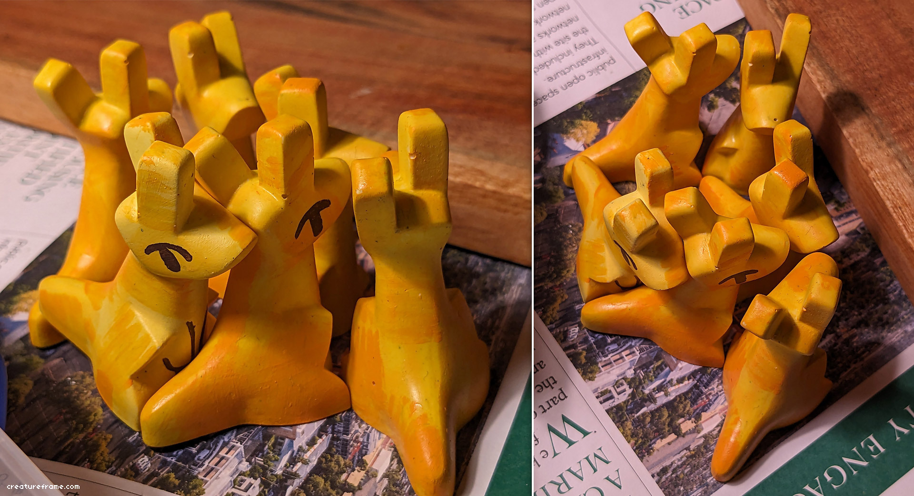
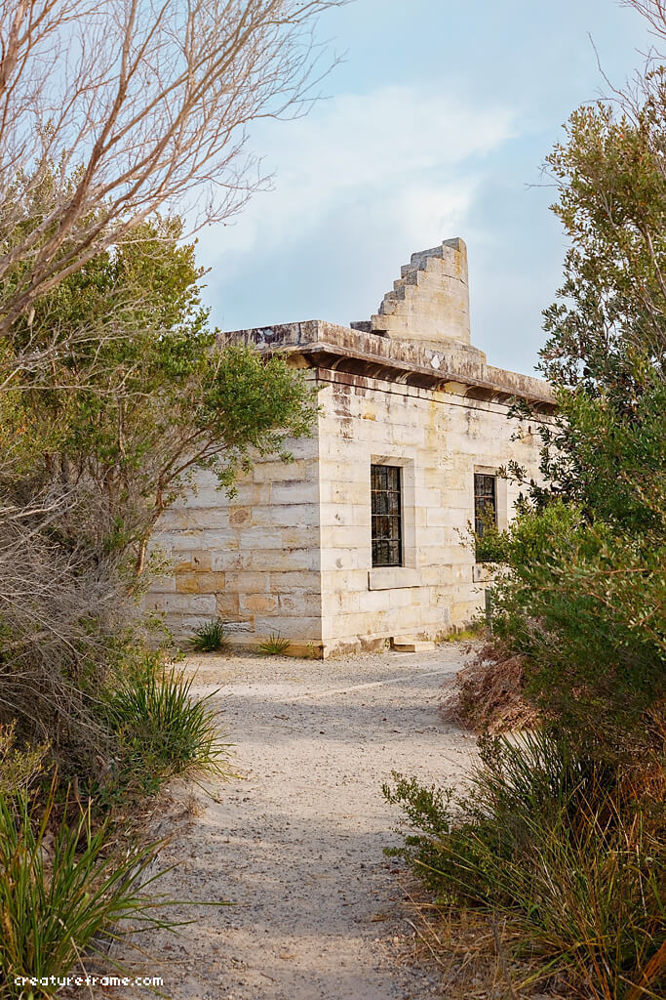

made some roos

i was really stoked with the final design for these fellas, really hit that cleanliness of shape i've been trying to achieve (and will still be wrestling with) for a long time.
especially within the limits of casting (having forms that flare downwards, that catch less bubbles, that are less likely to break on demolding, and that can be painted properly)
i was really stoked with the final design for these fellas, really hit that cleanliness of shape i've been trying to achieve (and will still be wrestling with) for a long time.
especially within the limits of casting (having forms that flare downwards, that catch less bubbles, that are less likely to break on demolding, and that can be painted properly)

like the echidnas, this was a project i initially started in 2020 during the big fires.
as a kid i thought australian animals were so overrated, but the older i get the more i appreciate them. especially their hardiness.
i grew up with the common greys, but the cutest ones i've seen are from kangaroo island SA, hands down. their dark chocolatey fur is much fluffier (owing to the island getting the full brunt of antarctic winds), and they can have adorable little white spots randomly dotted about on their faces and bodies. they're smaller too, like everything else on the island.

as a kid i thought australian animals were so overrated, but the older i get the more i appreciate them. especially their hardiness.
i grew up with the common greys, but the cutest ones i've seen are from kangaroo island SA, hands down. their dark chocolatey fur is much fluffier (owing to the island getting the full brunt of antarctic winds), and they can have adorable little white spots randomly dotted about on their faces and bodies. they're smaller too, like everything else on the island.
concepting

i used to more often start by sketching up a page of real life studies of a subject first before trying to design anything, for two reasons:
1. to learn it's natural form, which will nearly always inform interesting things in a design; nature has cool shapes that often go unnoticed unless you really *look*,
2. but also to "get it out of my system", otherwise i start off trying to incorporate too much (very boring) detail.
i've been lazier with it lately but you can still see how i still start off way too overdetailed - it's a ongoing practice, learning how to not overdo it, and learning to break things down as far as can be, while remaining recogniseable.
the whole purpose of this stage for me, at least for designing for a cast (game assets are another game altogether), is exploration of shapes.
1. to learn it's natural form, which will nearly always inform interesting things in a design; nature has cool shapes that often go unnoticed unless you really *look*,
2. but also to "get it out of my system", otherwise i start off trying to incorporate too much (very boring) detail.
i've been lazier with it lately but you can still see how i still start off way too overdetailed - it's a ongoing practice, learning how to not overdo it, and learning to break things down as far as can be, while remaining recogniseable.
the whole purpose of this stage for me, at least for designing for a cast (game assets are another game altogether), is exploration of shapes.
3D model

the rough blockout, trying to match the concept as closely as possible with as few edges as possible (while keeping clear edge loops, which are needed for subdividing the mesh later). i've learned the importance of sticking to this stage for longer than feels comfortable, and how much time it saves later once you've "res'd up" the mesh.
then just spent a good chunk of time playing around with which edges to keep sharp and which to smooth out, and seeing which combinations looked better to me
no UVing or texture this time, learnt my lesson from the echidna. if i was ever going to make this into an animated asset it would need to be retopologised anyway before making any textures.
then just spent a good chunk of time playing around with which edges to keep sharp and which to smooth out, and seeing which combinations looked better to me
no UVing or texture this time, learnt my lesson from the echidna. if i was ever going to make this into an animated asset it would need to be retopologised anyway before making any textures.

wouldve taken a photo of the mold and casts but theyre packed up in storage atm.
it still needs some care when casting. the ears need to be filled and have the air banged out at each angle, before filling the rest of the body, and sometimes the head or ears will break right off trying to get them out of the mold, but it's worth it and i feel it's a stronger design than the echidna.
the master was a heck of a job to sand down though, with all those tiny little edges. that and having to paint into tiny little crevices with the thick bulky paint i use, there's always a compromise between making cool shapes and how difficult (if not sometimes impossible) it is to work with later on
a number of the turquoise ones have some 4 to 8 layers of paint underneath, as I was trying various browns and blues but couldn't come up with a palette that worked. bloody hell, paint mixing irl is a job and a half. i've become more cowardly with palettes and often give up on making more unusual colour combinations work, compared to working digitally which offers infinite playtime for that
and here's six of the final roos from the finished lot!


.